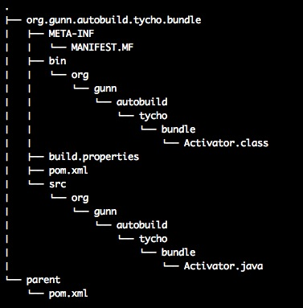

Kid Capture开发手记
缘起
我四岁的儿子和他10岁的表哥迷上了我的电脑，只要我不用就和他哥跑到电脑前。随后就会传来一阵阵的狂笑。我过去一看发现他们抱着Photo Booth狂拍照片，狂拍视屏。被那些加上各种各样效果的视屏逗的开心死了。 这个时候我就在想我自己能否做一个这种小东西呢？让儿子在他妈妈的 瘟都死 （Windows）上也能用呢？ 整理整理思路就动手做吧！
需求
- 虽然是个小东西，但是也要简单列举一下需求。以确定开发的边界。
通过摄像头获取图像信息。显示到主界面上。
提供三个功能按钮
- 开始录制视屏
点击后就开始将摄像头获取的图片信息以视频流的形式保存成一个文件。同时还需要记录下麦克风的声音。保存成文件
- 停止录制
停止录制的过程，将声音文件和视频文件合并成一个小电影
- 拍照
将摄像头的当前帧保存成文件
第一个版本先做这么多吧！关于效果部分后续在跟进
技术方案
由于我预定的目标平台是 瘟都死 又不想使用笨重的Visual Studio。 所以决定采用如下的工具
图像采集
图像采集说白了就是从摄像头读取图像信息。在微软家有Direct.Show 可以用。从CodeProject网站上可以找到大量的示例，不是C#就是VB。 当然通过Python也可以调用，只是要求系统上一定要有Direct。所以放弃。最后在Youtube上看到一老外用10行代码完成了视屏采集。为之一动，对自己说就用他吧！他就是OpenCV。
1 2 3 4 5 6 7 8 9 10 11 12 13 14 15 16 | #!/usr/bin/python
# -*- coding: utf-8 -*-
import cv2.cv as cv
import cv2
capture = cv.CaptureFromCAM(0)
cv.NamedWindow("camera", 1)
while True:
img = cv.QueryFrame(capture)
cv.ShowImage("camera", img)
k = 0xFF & cv.WaitKey(10);
if k == 27:
break
|
- 4,5行导入OpenCV的包
- 7打开摄像头，并开始读取frame
- 11 ~ 13 读取摄像头的数据帧，并显示到窗体中。
- 15 ~ 16 判断有没有用户输入，如果是 esc键就退出。
上面的代码就是视屏捕捉的所有核心！超级简单吧！不过有个问题上面的代码只能使用 OpenCV 自己的图像界面，而且他的并不能集成到其他框架中来。所以要对他他做写改动才可以。
在他的官方网站上找到了一个例子
初次接触PyAudio
前两天无意间PyAudio，当时没觉得怎么地。今天拿过来练了练。发现这个小东西还真的不错。只需要简单的几行代码就可以完成录音和播放wav的功能。而且他还是跨平台的，在WinXp和Linux下运行良好（遗憾的是在Mac OS Lion下编译没通过）。
下面这个代码来源于实现了录音功能。 http://hyry.dip.jp:8000/pydoc/wave_pyaudio.html#pyaudio 。
# -*- coding: utf-8 -*-
from pyaudio import PyAudio, paInt16
import numpy as np
from datetime import datetime
import wave
# 将data中的数据保存到名为filename的WAV文件中
def save_wave_file(filename, data):
wf = wave.open(filename, 'wb')
wf.setnchannels(1)
wf.setsampwidth(2)
wf.setframerate(SAMPLING_RATE)
wf.writeframes("".join(data))
wf.close()
NUM_SAMPLES = 2000 # pyAudio内部缓存的块的大小
SAMPLING_RATE = 8000 # 取样频率
LEVEL = 1500 # 声音保存的阈值
COUNT_NUM = 20 # NUM_SAMPLES个取样之内出现COUNT_NUM个大于LEVEL的取样则记录声音
SAVE_LENGTH = 8 # 声音记录的最小长度：SAVE_LENGTH * NUM_SAMPLES 个取样
# 开启声音输入
pa = PyAudio()
stream = pa.open(format=paInt16, channels=1, rate=SAMPLING_RATE, input=True,
frames_per_buffer=NUM_SAMPLES)
save_count = 0
save_buffer = []
while True:
# 读入NUM_SAMPLES个取样
string_audio_data = stream.read(NUM_SAMPLES)
# 将读入的数据转换为数组
audio_data = np.fromstring(string_audio_data, dtype=np.short)
# 计算大于LEVEL的取样的个数
large_sample_count = np.sum( audio_data > LEVEL )
print np.max(audio_data)
# 如果个数大于COUNT_NUM，则至少保存SAVE_LENGTH个块
if large_sample_count > COUNT_NUM:
save_count = SAVE_LENGTH
else:
save_count -= 1
if save_count < 0:
save_count = 0
if save_count > 0:
# 将要保存的数据存放到save_buffer中
save_buffer.append( string_audio_data )
else:
# 将save_buffer中的数据写入WAV文件，WAV文件的文件名是保存的时刻
if len(save_buffer) > 0:
filename = datetime.now().strftime("%Y-%m-%d_%H_%M_%S") + ".wav"
save_wave_file(filename, save_buffer)
save_buffer = []
print filename, "saved"
content
让Netty接受WebSocket请求
缘起
最近有个需要要求让 JBoss AS 7 支持WebSocket请求。遇到这样的问题，我的第一反应就是去想办法去换掉 Jboss AS 7 中的tomcat 容器或者把HTTP请求转发到另外一个容器中。一个老外 JBoss 7 and WebSocket 中就这么干的。但是觉得还存在一些问题。 所以一直在尝试其他方案，突然一天看到了Netty的架构图。发现他居然支持WebSocket接入。如果我做一个subsystem，把Netty装进去是不是就可以解决这个问题呢？
尝试
有这如上的想法以后，就得去验证。验证的第一步就是确定Netty是否真的能够支持WebSocket。什么话都不用说了上让代码证明一切吧！

使用Maven和tycho构建OSGi插件项目
介绍Tycho插件
自动构建OSGi Plugin项目，一直以来就是个头疼的问题。直到 Tycho 的出现,这些都不在成为问题了。用它你可以很轻松来构建Eclipse插件(Eclipse Plugin) , Eclipse features , Eclipse的更新站点(Update Site)以及可以直接执行的Eclipse产品(Eclipse Product)。 Tycho插件将会直接使用Eclipse项目中MANIFEST.MF中所包含的依赖信息。这样依赖pom.xml文件就会很小。
介绍Nexus私服
Nexus的OSS版是完全免费的Maven私服。很多企业都在使用他，我们也赶个热闹，用它来构建我们团队内部的私服。在默认情况下Nexus OSS版是不支持eclipse 推出的p2这个仓库的，而Tycho就是依赖这种仓库。所以为了让他能和Tycho配合工作我们让Nexus加上这种能力。 万幸的是sonatype已经开发出了 nexus-p2-repository-plugin ， nexus-p2-bridge-plugin 这两个插件，他们为Nexus加上这两种能力 。我们只需要安装这两个插件就好了。 具体操作请参考： Nexus OSGi Experimental Features P2 Repository Plugin
构建Eclipse 插件
好了既然万事具备了，我们就开始用Tycho来构建Eclipse 插件了。现在我手边有一个通过Eclipse 创建名为org.gunn.autobuild.tycho.bundle的Plugin项目。我要对他进行构建。 首先我们需要一个pom.xml文件。我们可以通过如下命令来生成：
mvn org.eclipse.tycho:tycho-pomgenerator-plugin:generate-poms -DgroupId=org.gunn.autobuild.tycho
这个时候我就得到了如下结构的pom.xml
<?xml version="1.0" encoding="UTF-8"?> <project xsi:schemaLocation="http://maven.apache.org/POM/4.0.0 http://maven.apache.org/xsd/maven-4.0.0.xsd" xmlns="http://maven.apache.org/POM/4.0.0" xmlns:xsi="http://www.w3.org/2001/XMLSchema-instance"> <modelVersion>4.0.0</modelVersion> <groupId>org.gunn.autobuild.tycho</groupId> <artifactId>org.gunn.autobuild.tycho.bundle</artifactId> <version>1.0.0-SNAPSHOT</version> <packaging>eclipse-plugin</packaging> </project>
这个时候如果你输入 mvn package肯定是会出错的。出错的原因是我们还没有把Tycho插件加入进来。 所以我们还需要一个如下如下结构的pom.xml.
<?xml version="1.0" encoding="UTF-8"?> <project> <modelVersion>4.0.0</modelVersion> <groupId>org.gunn.autobuile</groupId> <artifactId>parent</artifactId> <version>1.0.0-SNAPSHOT</version> <packaging>pom</packaging> <properties> <tycho-version>0.15.0</tycho-version> </properties> <repositories> <repository> <id>juno</id> <layout>p2</layout> <url>http://download.eclipse.org/releases/juno</url> </repository> </repositories> <build> <plugins> <plugin> <groupId>org.eclipse.tycho</groupId> <artifactId>tycho-maven-plugin</artifactId> <version>${tycho-version}</version> <extensions>true</extensions> </plugin> <plugin> <groupId>org.eclipse.tycho</groupId> <artifactId>tycho-p2-director-plugin</artifactId> <version>${tycho-version}</version> <executions> <execution> <id>materialize-products</id> <goals> <goal>materialize-products</goal> </goals> </execution> <execution> <id>archive-products</id> <goals> <goal>archive-products</goal> </goals> </execution> </executions> </plugin> <plugin> <groupId>org.eclipse.tycho</groupId> <artifactId>target-platform-configuration</artifactId> <version>${tycho-version}</version> <configuration> <environments> <environment> <os>win32</os> <ws>win32</ws> <arch>x86</arch> </environment> <environment> <os>linux</os> <ws>gtk</ws> <arch>x86_64</arch> </environment> <environment> <os>macosx</os> <ws>cocoa</ws> <arch>x86_64</arch> </environment> </environments> </configuration> </plugin> </plugins> </build> </project>
将如下片段加入到org.gunn.autobuild.tycho.bundle项目下的pom.xml
<parent> <relativePath>../parent/pom.xml</relativePath> <groupId>org.gunn.autobuild</groupId> <artifactId>parent</artifactId> <version>1.0.0</version> </parent>
这个时候我们得到了如下的目录结构：
注解
项目中的pom.xml中的artifactId 想要和MANIFEST.MF文件中的Bundle-SymbolicName保持一致。pom.xml中version要和MANIFEST.MF文件中的Bundle-Version一致
这个时候你通过：
cd org.gunn.autobuild.tycho.bundle mvn package
就会完成对这个budle的打包。关于tycho更多的介绍可以参考 Eclipse Wiki tycho
使用Nexus私服
请按照 视屏设定Nexus私服。如过要在项目中使用私服的内容就直接在parent/pom.xml文件中修改repository中的内容。 例如有如下图所示的Nexus私服：

如果需要使用的Indigo仓库，只需要将下面xml片段加入到parent/pom.xml中。
<repository>
<id>juno</id>
<layout>p2</layout>
<url>http://192.168.100.235:8881/nexus/content/repositories/juno/</url>
</repository>